19 kuraterade screenshots. Verklig lokal implementation med syntetiska testdata. Klicka för full viewport. Visuell mänsklig sign-off återstår.
Slutrapport · Responsive QA · Scope authority · Prestanda · Tester · Manifest
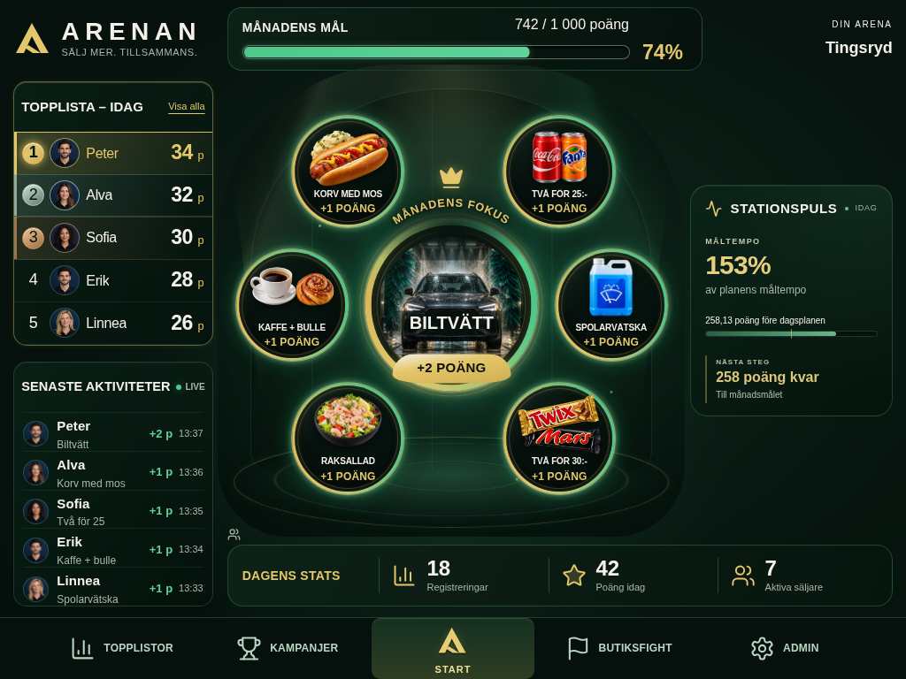
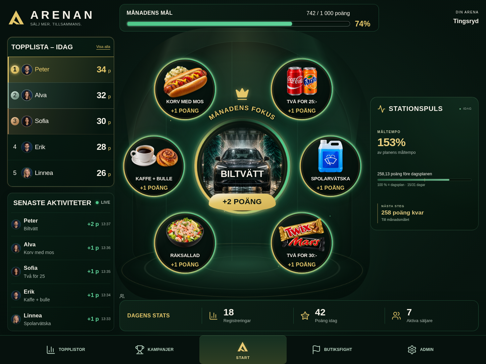
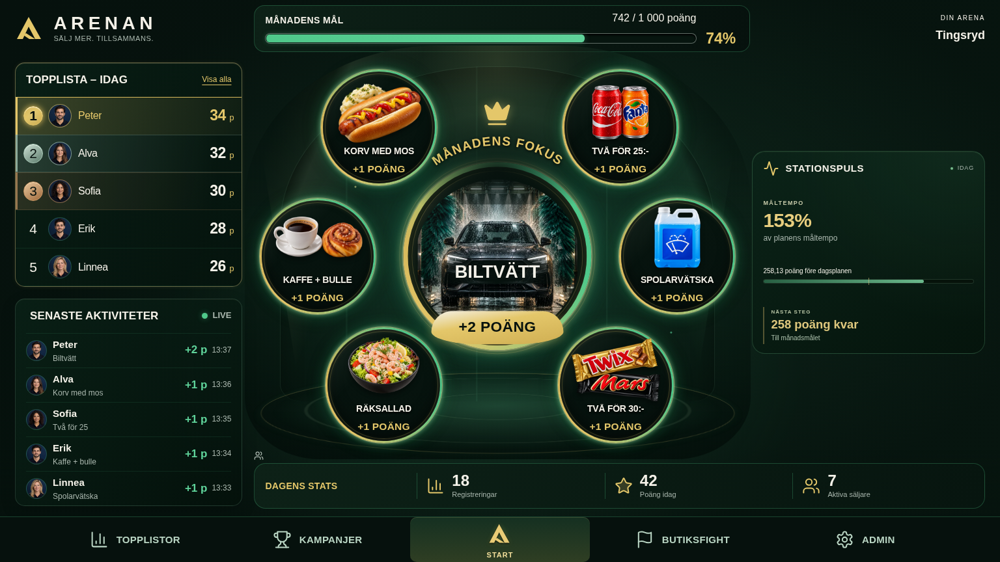
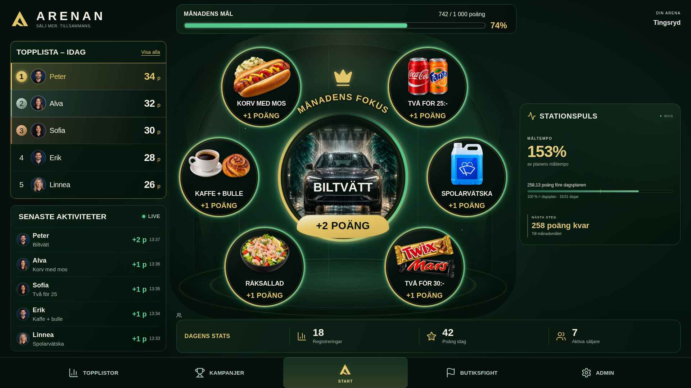
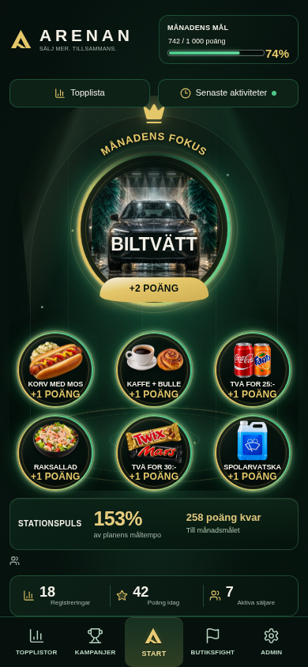
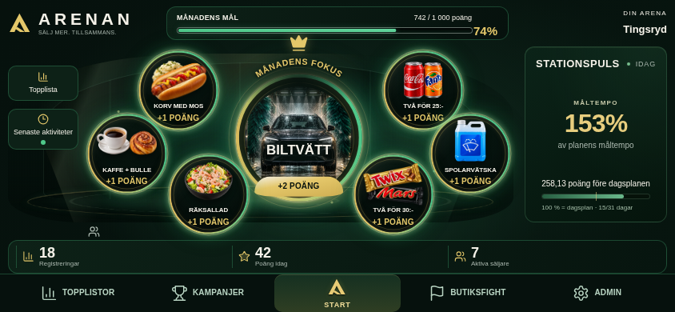
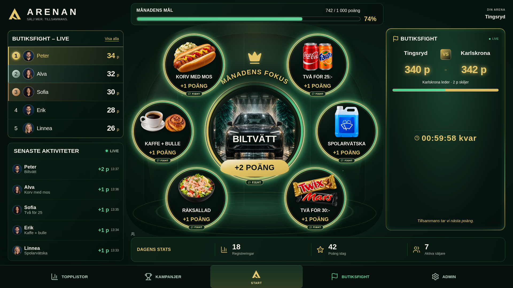
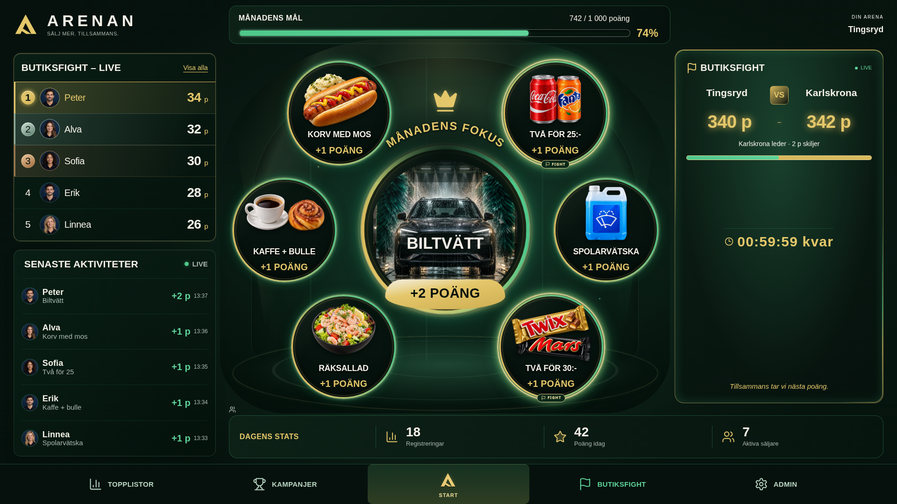
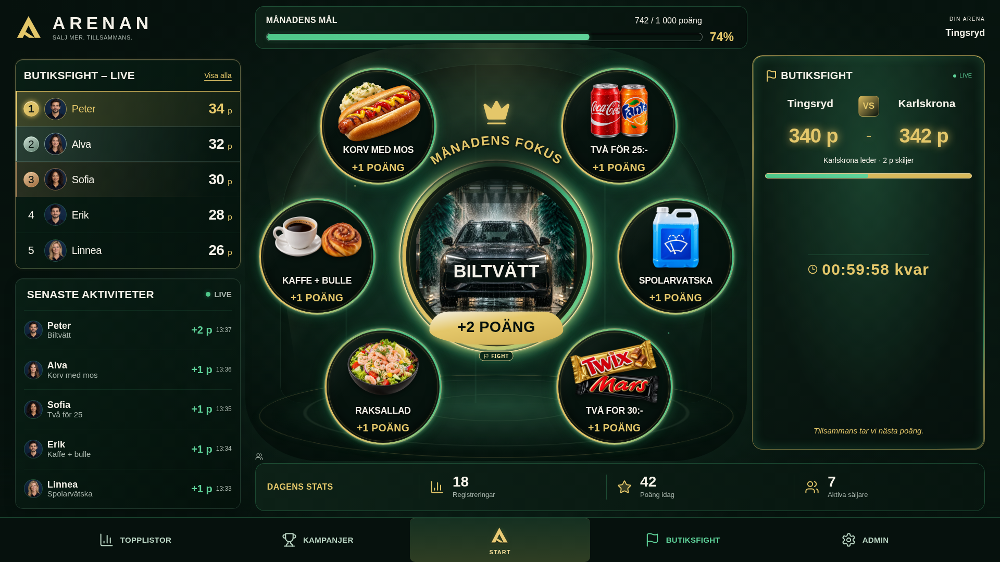
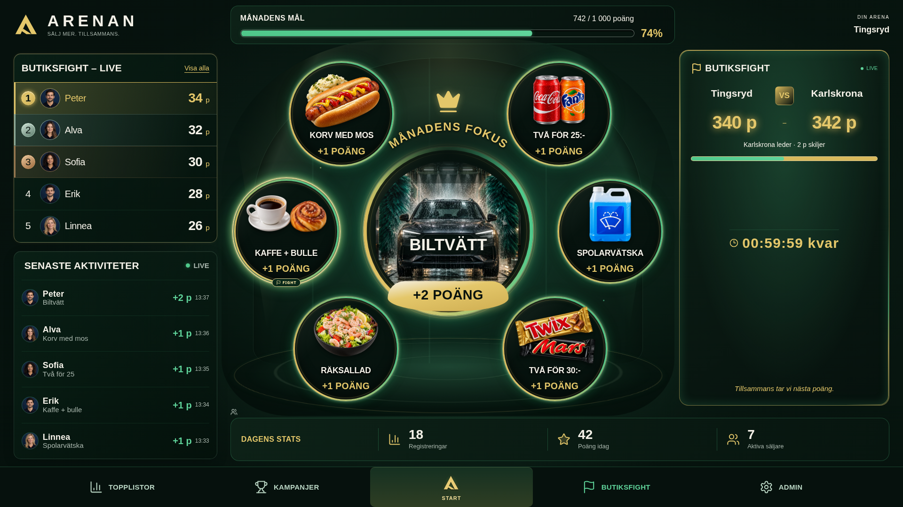
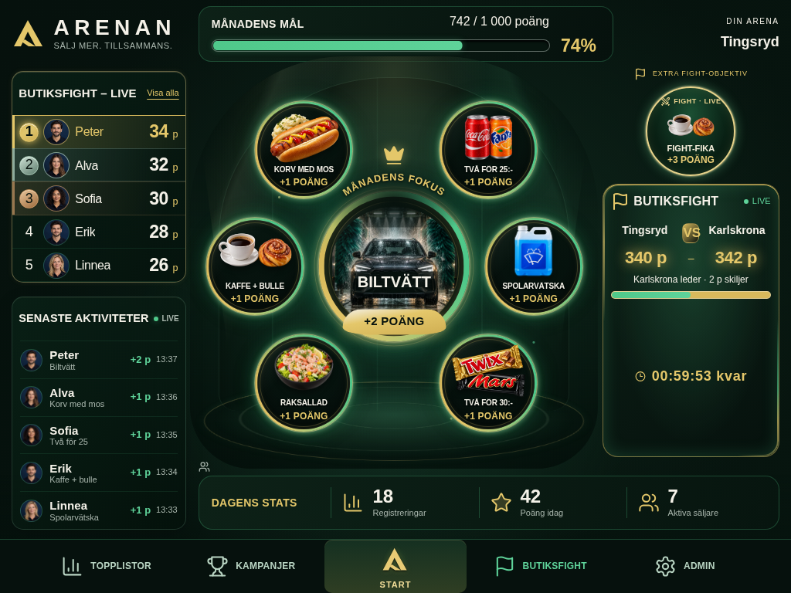
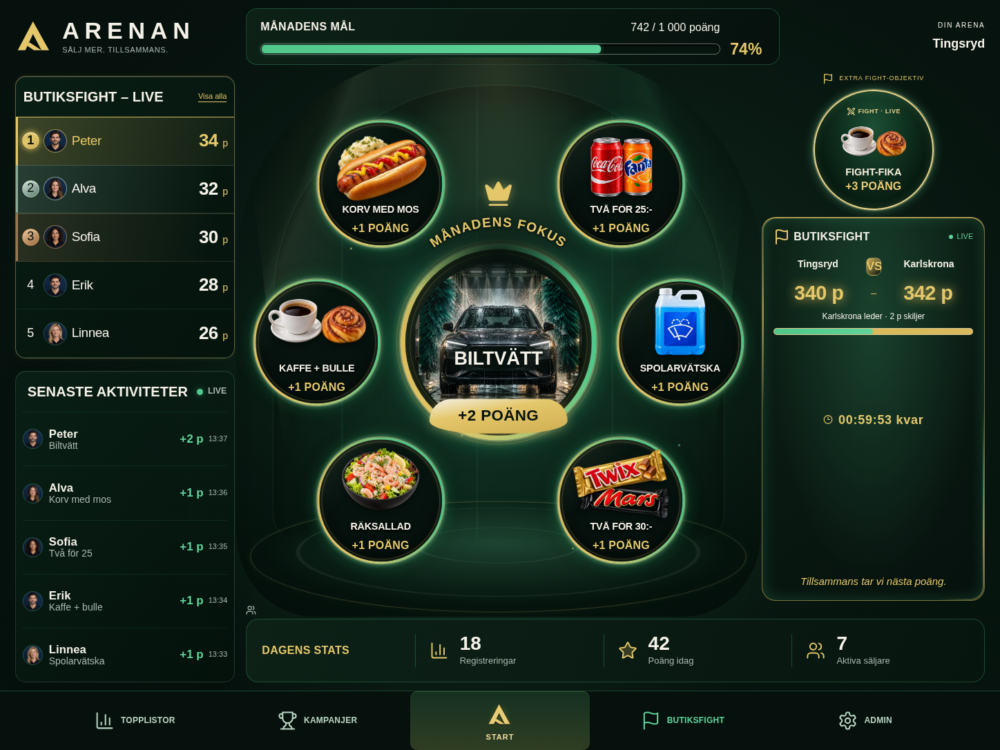
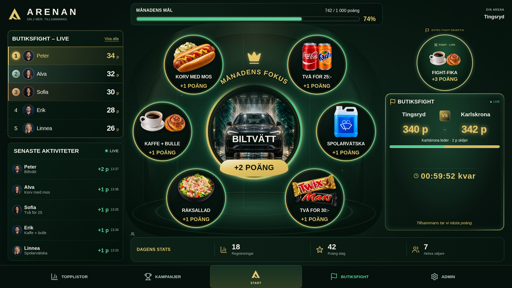
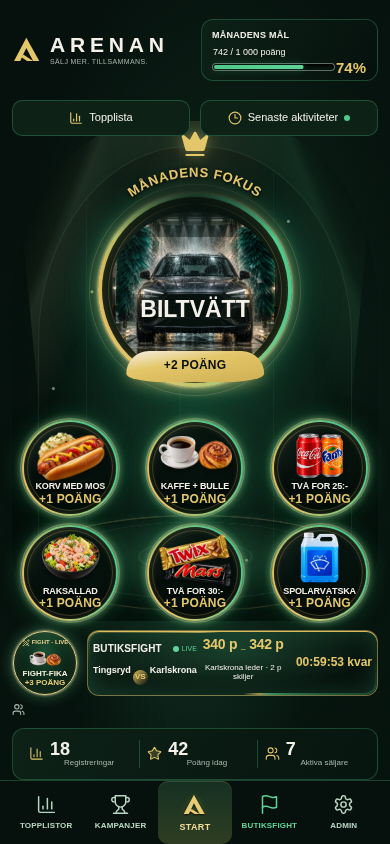
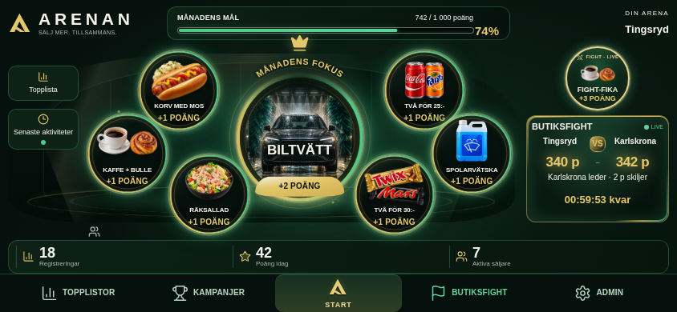
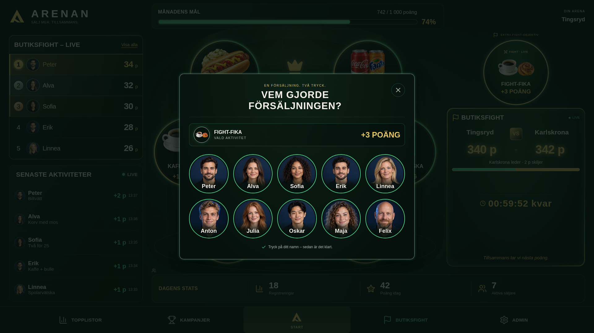
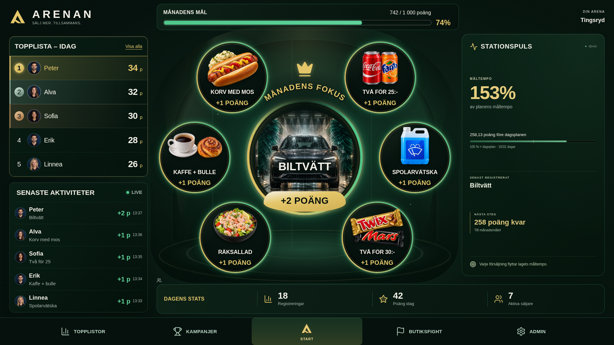